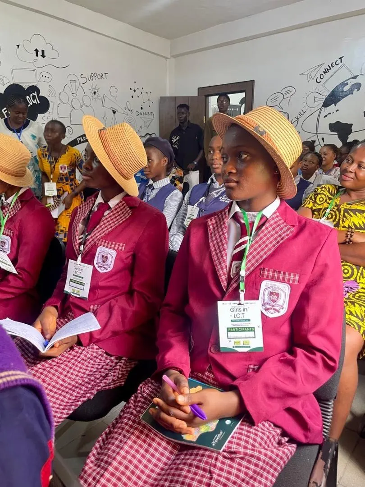
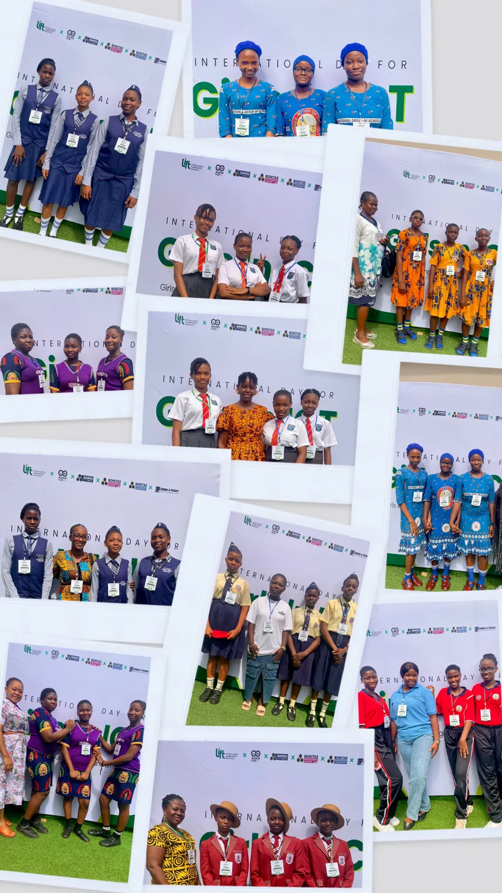
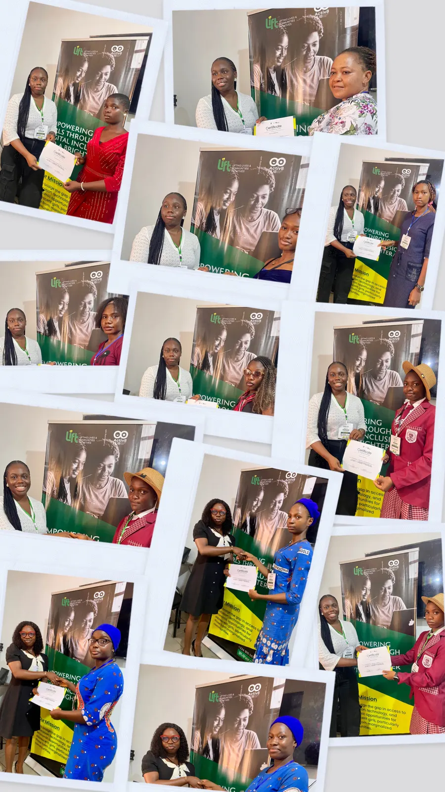

What happens when young girls are given access to technology, mentorship, innovation, and a room full of possibilities? You get confidence, an opportunity to share bold ideas and a space for future leaders to thrive.
That was the atmosphere at the International Girls in ICT Day Celebration 2026 held in Awka, Anambra State, where secondary school girls gathered for an inspiring day of learning, collaboration, creativity, and digital exploration.
Organized by LIFT Initiative in partnership with Activ8 Hub with support from other organizations committed to youth empowerment and digital inclusion, the event created a practical and engaging space for girls to see themselves in technology, leadership, and innovation.
From the moment participants arrived, the energy was impossible to miss. The girls engaged in interactive sessions, mentorship conversations, innovation challenges, networking opportunities, and school presentations designed to stretch their imagination beyond the classroom.

This was more than just another event, however, it was a reminder that girls belong in technology spaces, and not just as spectators, but as creators, innovators, and leaders.
One of the highlights of the day was the innovation challenge session, where participants worked in teams to develop tech-enabled solutions addressing real social issues. The confidence, creativity, and teamwork displayed by the students showed what is possible when young minds are encouraged to think critically and dream boldly.
The event also celebrated excellence, with St. Albert the Great, Obosi emerging as the first-place school, while Rehoboth International School secured second place.
Beyond the awards and activities, the impact of the program could be

seen in the excitement on participants’ faces, the questions they asked, the ideas they shared, and the connections they built.
For many of the girls, this experience was not only educational but transformational. At a time when conversations around digital inclusion and gender representation in STEM continue globally, initiatives like this matter deeply. They help close opportunity gaps, challenge stereotypes, and create pathways for girls to confidently participate in the future of work and innovation.
The future of technology becomes stronger when girls are empowered to participate in shaping it. And if this event proved anything, it is this: the next generation of female innovators is already here.
Special appreciation goes to all partners and supporters whose collaboration helped make the event a success, including Activ8 Hub, Bonitas Investment Limited, Bonitas Media Solution, Bonitas Tech and Marketing, John Joe and Partners, and Bonitas Engineering & Equipment.
